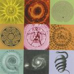

| Artist: | Metaphor |
| Title: | Starfooted |
| Label: | Galileo Records GR 002 |
| Length(s): | 74 minutes |
| Year(s) of release: | 2000 |
| Month of review: | 05/2000 |
| 1) | Ladder From The Sky | 6.53 |
| 2) | Chaos With A Crown Of Gold | 5.58 |
| 3) | Starfooted In A Garden Of Cans | 15.04 |
| 4) | The Illusion Of Flesh | 2.07 |
| 5) | In The Cave | 9.13 |
| 6) | Seed | 10.09 |
| 7) | The Bridal Chamber | 2.42 |
| 8) | Don't Sleep | 9.00 |
| 9) | Battle Of The Archons | 10.24 |
| 10) | The Assumption | 2.19 |